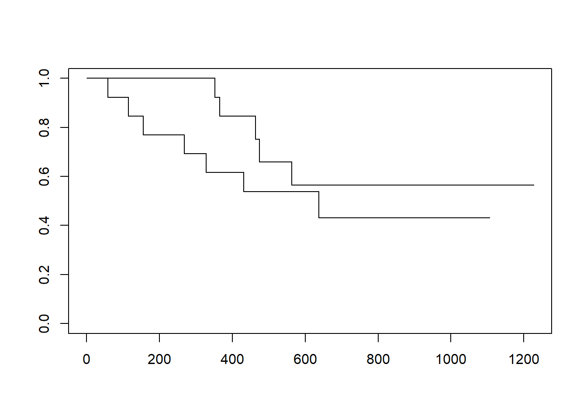
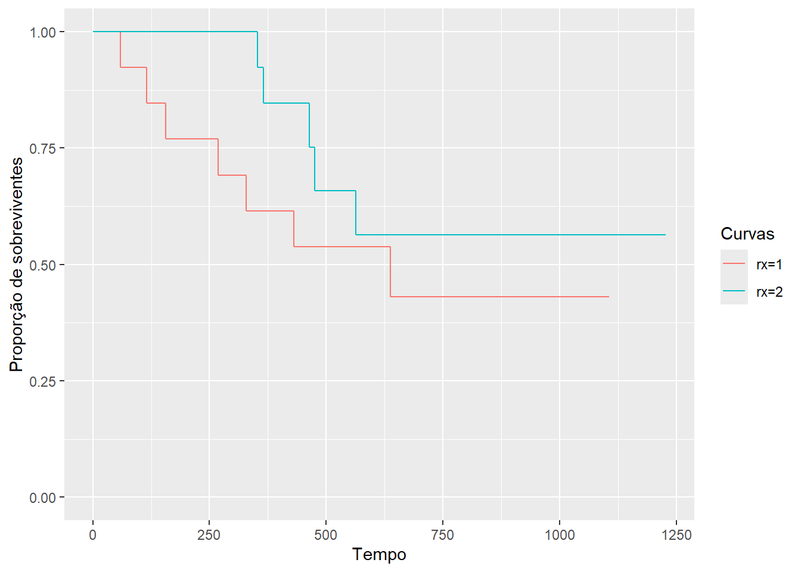
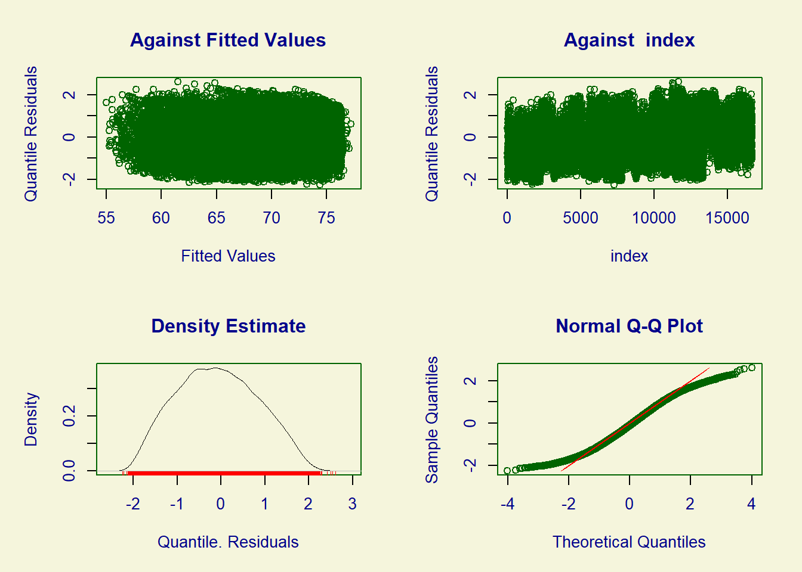

Modelos de sobrevivência no R
econometria
A Análise de Sobrevivência compreende os estudos em que o interesse principal é avaliar o tempo até a ocorrência de um evento pré-determinado. Esses tempos, chamados de tempos de falha, podem, então, ser explicados por outras variáveis a partir de modelos de regressão paramétricos ou semi-paramétricos. Uma característica fundamental desse tipo de estudo é a presença de censura, definida como a observação parcial do tempo de falha.
Para ilustrar as funções discutidas aqui, utilizaremos o banco de dados ovarian, do pacote survival. Este banco traz o tempo de sobrevivência (ou censura) de 26 mulheres com câncer de ovário e o objetivo do estudo foi comparar dois tratamentos distintos para essa doença.
Nesse exemplo, o tempo de falha é o intervalo entre a entrada no estudo e a ocorrência do evento de interesse que, aqui, é a morte da paciente. A censura neste caso é causada pelo abandono do estudo ou pela não ocorrência do evento até o fim do acompanhamento, ou seja, os casos em que a paciente estava viva no fim do estudo.
Para mais informações sobre o banco de dados, consulte o help(ovarian).
Kaplan-Meier e Log-rank
O Kaplan-Meier é a principal ferramenta para visualizar dados de sobrevivência. Esses gráficos ajustam curvas tipo-escada da proporção de indivíduos em risco — que ainda não falharam e não foram censurados — ao longo do tempo. Para plotar um Kaplan-Meier no R, utilizamos a função survfit() e a função plot().
Também podemos construir um Kaplan-Meier com o ggplot2, mas observe que é necessário fazer algums modificações no objeto fit:

O teste de log-rank para comparação de grupos é realizado pela função survdiff():
Call:
survdiff(formula = Surv(futime, fustat) ~ rx, data = ovarian)
N Observed Expected (O-E)^2/E (O-E)^2/V
rx=1 13 7 5.23 0.596 1.06
rx=2 13 5 6.77 0.461 1.06
Chisq= 1.1 on 1 degrees of freedom, p= 0.3 Modelos paramétricos
Para ajustar modelos paramétricos, podemos utilizar a função survreg().
Call:
survreg(formula = Surv(futime, fustat) ~ rx + age, data = ovarian,
dist = "exponential")
Value Std. Error z p
(Intercept) 12.1225 2.3966 5.06 4.2e-07
rx 0.6611 0.6159 1.07 0.28310
age -0.1051 0.0319 -3.30 0.00098
Scale fixed at 1
Exponential distribution
Loglik(model)= -91.2 Loglik(intercept only)= -98
Chisq= 13.65 on 2 degrees of freedom, p= 0.0011
Number of Newton-Raphson Iterations: 5
n= 26 Observe que no exemplo acima utilizamos a distribuição Exponencial. O argumento dist = pode ser modificado para ajustarmos modelos com outras distribuições:
dist = "weibull"— distribuição Weibull (default)dist = "gaussian"— distribuição Normaldist = "logistic"— distribuição Logísticadist = "lognormal"— distribuição Log-normaldist = "loglogistic"— distribuição Log-logística
Modelo semi-paramétrico de Cox
No R, a função mais utilizada para ajustar modelos de Cox é a coxph().
Call:
coxph(formula = Surv(futime, fustat) ~ age + rx, data = ovarian)
n= 26, number of events= 12
coef exp(coef) se(coef) z Pr(>|z|)
age 0.14733 1.15873 0.04615 3.193 0.00141 **
rx -0.80397 0.44755 0.63205 -1.272 0.20337
---
Signif. codes: 0 '***' 0.001 '**' 0.01 '*' 0.05 '.' 0.1 ' ' 1
exp(coef) exp(-coef) lower .95 upper .95
age 1.1587 0.863 1.0585 1.268
rx 0.4475 2.234 0.1297 1.545
Concordance= 0.798 (se = 0.076 )
Likelihood ratio test= 15.89 on 2 df, p=4e-04
Wald test = 13.47 on 2 df, p=0.001
Score (logrank) test = 18.56 on 2 df, p=9e-05Generalized Additive Model (GAM)
Os modelos aditivos generalizados ou GAM são modelos baseados na teoria desenvolvida por Trevor Hastie e Robert Tibshirani, e podem ser vistos como uma generalização de GLM, no sentido de que todos os GLM sãoo casos particulares de GAM.
Na regressão normal e em GLM assumimos, em geral, que as variáveis aleatórias correspondentes aos indivíduos são independentes, e que existe uma função, denominada função de ligação, que une as médias destas variáveis aleatórias a um certo preditor linear.
A grande mudança nos modelos aditivos generalizados está na forma do preditor. Para cada variável explicativa, temos associada uma função a ser estimada (ou suavizada), sendo que o preditor fica definido como a soma dessas funções
g(\mu_i) = f_0 + \sum f(x_{ij})
Para evitar o desconforto da interpretação das contribuições marginais (funções), uma alternativa é utilizar as funções de suavização para ajustar variáveis de controle em que não há interesse direto, e manter a parte principal com termos paramétricos. Geralmente isso facilita a interpretação e melhora o ajuste do modelo em relação ao GLM.
Pacote mgcv
O pacote mgcv é um dos pacotes mais completos do R e permite simulação, ajuste, visualização e análise de resíduos para gam. O pacote gerou até um livro.
Na prática, a utilização do GAM não difere muito de modelos GLM. Uma das únicas diferenças na especificação do modelo é que podemos utilizar a função s para determinar quais termos queremos que sejam ajustados com funções aditivas.
Exemplo: PNUD
Family: Gamma
Link function: inverse
Formula:
espvida ~ ano + s(rdpc) + s(i_escolaridade)
Parametric coefficients:
Estimate Std. Error t value Pr(>|t|)
(Intercept) 1.234e-01 1.545e-03 79.91 <2e-16 ***
ano -5.437e-05 7.722e-07 -70.41 <2e-16 ***
---
Signif. codes: 0 '***' 0.001 '**' 0.01 '*' 0.05 '.' 0.1 ' ' 1
Approximate significance of smooth terms:
edf Ref.df F p-value
s(rdpc) 8.858 8.993 1200.58 <2e-16 ***
s(i_escolaridade) 5.681 6.817 22.71 <2e-16 ***
---
Signif. codes: 0 '***' 0.001 '**' 0.01 '*' 0.05 '.' 0.1 ' ' 1
R-sq.(adj) = 0.831 Deviance explained = 81.9%
GCV = 0.0011938 Scale est. = 0.001185 n = 16695
Pacote gamlss
Se por algum motivo existir algum problema na análise em relação à distribuição, heterocedasticidade, e utilização de preditores lineares, uma possível alternativa é o GAMLSS.
GAMLSS significa Generalized Additive Models for Location, Scale and Shape. Com GAMLSS é possível modelar não só a média da distribuição \mu_i (primeiro momento), mas também a variância \sigma_i (segundo momento), a assimetria \phi_i (terceiro momento) e a curtose \rho_i (quarto momento), usando preditores.
Por ser um modelo aditivo, o GAMLSS permite que sejam adicionados termos de suavização na fórmula do modelo, o que o torna uma generalização natural do GAM (em relação à modelagem, não ao método de ajuste).
Por fim, o modelo GAMLSS possui mais de 50 famílias de distribuições implementadas, o que nos dá uma enorme gama de opções para criação de modelos.
Também é possível adicionar efeitos aleatórios utilizando o GAMLSS, mas essa parte ainda é experimental.
Mas tudo vem com um preço. Por ser um grande canhão, o método de ajuste de modelos GAMLSS geralmente são baseados técnicas de otimização aproximadas. Além disso, o ajuste de modelos pode ser mais lento que os concorrentes. Por fim, a análise de resíduos para GAMLSS é bastante limitada (e provavelmente continuará sendo).
Recomendamos a utilização do gamlss com muito cuidado, e sempre acompanhando outras modelagens, usando glm ou gam, por exemplo.
Exemplo: PNUD
GAMLSS-RS iteration 1: Global Deviance = 78553.62
GAMLSS-RS iteration 2: Global Deviance = 77935.35
GAMLSS-RS iteration 3: Global Deviance = 77903.36
GAMLSS-RS iteration 4: Global Deviance = 77900.75
GAMLSS-RS iteration 5: Global Deviance = 77900.38
GAMLSS-RS iteration 6: Global Deviance = 77900.32
GAMLSS-RS iteration 7: Global Deviance = 77900.31
GAMLSS-RS iteration 8: Global Deviance = 77900.31
GAMLSS-RS iteration 9: Global Deviance = 77900.31 ******************************************************************
Family: c("NET", "Normal Exponential t")
Call: gamlss(formula = espvida ~ cs(rdpc) + cs(i_escolaridade),
sigma.formula = ~ano, family = NET(), data = dados)
Fitting method: RS()
------------------------------------------------------------------
Mu link function: identity
Mu Coefficients:
Estimate Std. Error t value Pr(>|t|)
(Intercept) 6.072e+01 4.392e-02 1382.42 <2e-16 ***
cs(rdpc) 1.150e-02 1.201e-04 95.71 <2e-16 ***
cs(i_escolaridade) 1.556e+01 1.958e-01 79.46 <2e-16 ***
---
Signif. codes: 0 '***' 0.001 '**' 0.01 '*' 0.05 '.' 0.1 ' ' 1
------------------------------------------------------------------
Sigma link function: log
Sigma Coefficients:
Estimate Std. Error t value Pr(>|t|)
(Intercept) 1.11223 0.01309 85.00 <2e-16 ***
ano2000 -0.34429 0.01745 -19.73 <2e-16 ***
ano2010 -0.76936 0.01808 -42.56 <2e-16 ***
---
Signif. codes: 0 '***' 0.001 '**' 0.01 '*' 0.05 '.' 0.1 ' ' 1
------------------------------------------------------------------
Nu parameter is fixed
Nu = 1.5
------------------------------------------------------------------
Tau parameter is fixed
Tau = 2
------------------------------------------------------------------
NOTE: Additive smoothing terms exist in the formulas:
i) Std. Error for smoothers are for the linear effect only.
ii) Std. Error for the linear terms maybe are not accurate.
------------------------------------------------------------------
No. of observations in the fit: 16695
Degrees of Freedom for the fit: 28.32315
Residual Deg. of Freedom: 16666.68
at cycle: 9
Global Deviance: 77900.31
AIC: 77956.95
SBC: 78175.69
******************************************************************
******************************************************************
Summary of the Quantile Residuals
mean = -0.08278299
variance = 0.8508743
coef. of skewness = 0.1034363
coef. of kurtosis = 2.249083
Filliben correlation coefficient = 0.9937856
******************************************************************Para mais informações sobre Análise de Sobrevivência, consultar as seguintes referências:
Colosimo, E.A. e Giolo, S.R.. (2005) Análise de Sobrevivência Aplicada. ABE — Projeto fisher. Editora Edgard Blucher
Kalbfleisch, J. D.; Prentice, Ross L. (2002). The statistical analysis of failure time data. New York: John Wiley & Sons.
Lawless, Jerald F. (2003). Statistical Models and Methods for Lifetime Data (2nd ed.). Hoboken: John Wiley and Sons.
Referências
CURSO-R. curso-r.github.com. Disponível em: https://github.com/curso-r/curso-r.github.com/. Acesso em: 02 jun. 2024.